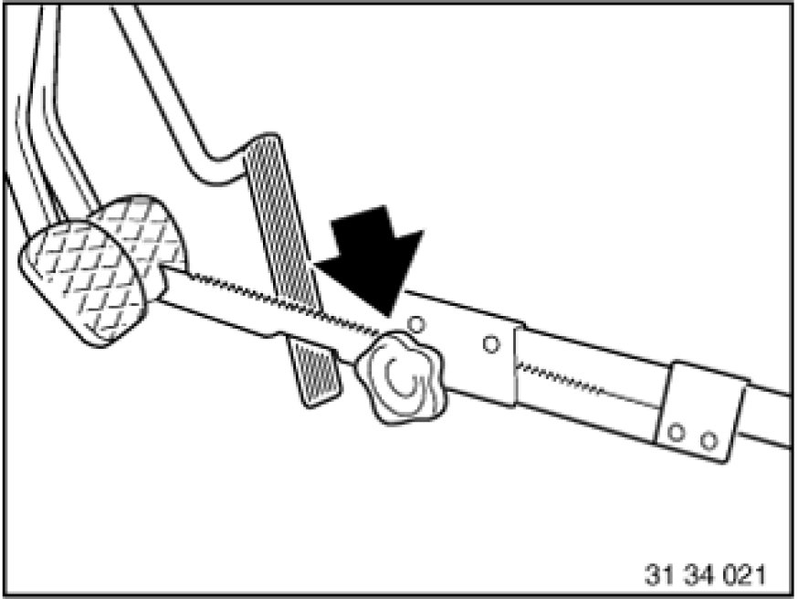
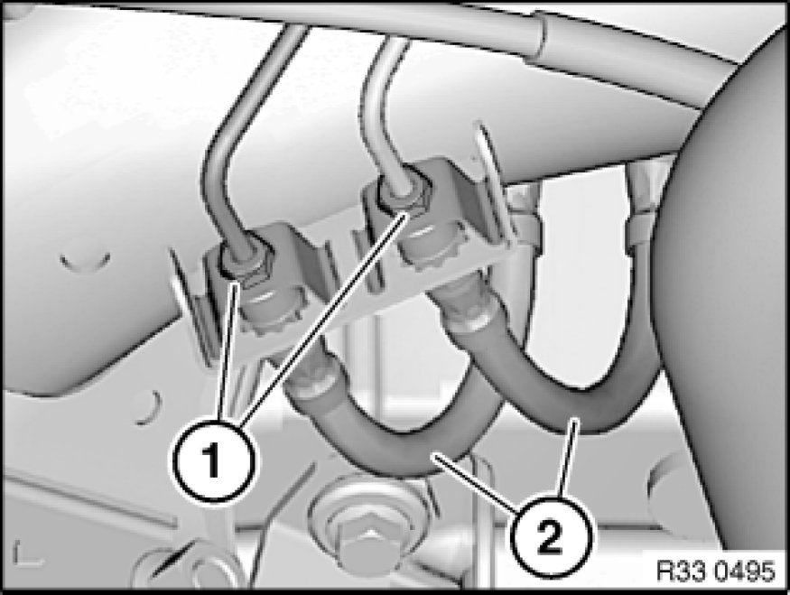
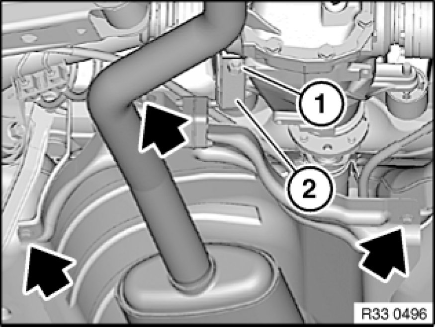
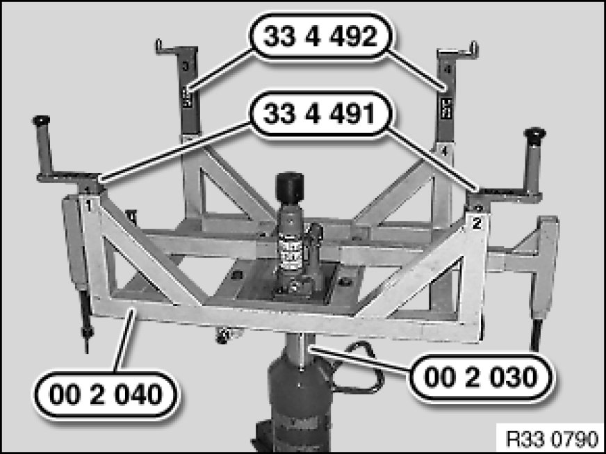
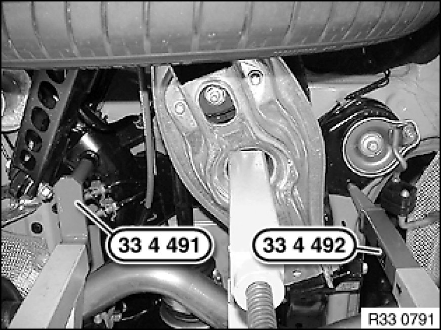
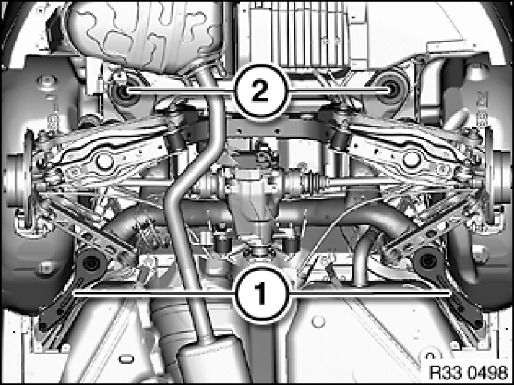

Lowering/Raising Rear Axle Carrier (Special Tool SWZ 00-2040)
33 31 503 - Lowering/raising rear axle carrier (special tool SWZ00-2040)

Special tools required:
- 00 2 030 00 2 030 Universal Hydro-Lifter Basic Unit
- 00 2 040 00 2 040 Basic Take-Up Fixture
- 33 4 491 33 4 490 Take-Up Set
- 33 4 492

Warning!
Danger of injury!
Failure to comply with the following instructions may result in the vehicle slipping off the lifting platform and critically injuring other persons.
Read and observe the information on permissible load distribution in the lifting platform operating instructions.
Load the luggage compartment with a minimum of 100 kg before lowering/removing the rear axle carrier.
When supporting components, make sure that
- the vehicle can no longer be raised or lowered
- the vehicle does not lift off the locating plates on the lifting platform
Warning!
Scalding hazard!
This work may only be carried out on an exhaust system which has cooled down.

Necessary preliminary tasks:
- Remove both rear coil springs 33 53 000 Removing and Installing / Replacing Rear Left or Right Coil Spring
- If necessary, remove tension strut(s)

Press clutch pedal down to floor and secure with pedal support.
Note:
The pedal support may only be released when the brake lines are reconnected.
This prevents brake fluid from emerging from the expansion tank and air from entering the system when the brake lines are opened.

Position an oil sump underneath to catch brake fluid.
Release banjo bolts (1), gripping brake hoses (2) at square head in the process.
Disconnect brake hoses (2) and seal off with plugs.
Installation Note:
Make sure brake hoses are laid without tension and with sufficient spacing to adjoining components.
Tightening torque 34 32 1AZ 34 32 Brake Lines.

Unclip cables for pulse generator and ride-height sensor/brake pad sensor on rear axle carrier at side.

Slacken nut (1).
Turn bracket (2) for exhaust system towards rear.
Release sheet nut and bolts (arrows).
Place heat shield on exhaust system.

If necessary, position special tool 00 2 040 00 2 040 Basic Take-Up Fixture with a 2nd person helping on workshop jack 00 2 030 00 2 030 Universal Hydro-Lifter Basic Unit.
Insert special tools 33 4 491 33 4 490 Take-Up Set and 33 4 492 into corresponding mountings of special tool 00 2 040 00 2 040 Basic Take-Up Fixture.
Lower special tool 33 3 274.

Note:
The jacking points on the left side are shown.
Align special tools 33 4 491 33 4 490 Take-Up Set and 33 4 492 to rear axle carrier.
Support rear axle carrier by operating workshop jack 00 2 030 00 2 030 Universal Hydro-Lifter Basic Unit.

Remove compression struts Replacing Left or Right Rear Axle Carrier Compression Strut (1).
Release screws (2) and swivel/remove stop plates to one side.
Lower rear axle carrier.
Installation Note:
Check threads for damage; if necessary, repair with Helicoil thread inserts 33 00 ... Notes on Repairing Threads.
First install compression struts Replacing Left or Right Rear Axle Carrier Compression Strut (1) and then tighten down screws (2).
Tightening torque 33 33 1AZ 33 33 Rear Axle Suspension.
After installation:
- Bleed braking system 34 00 050 Bleeding Brake System With DSC